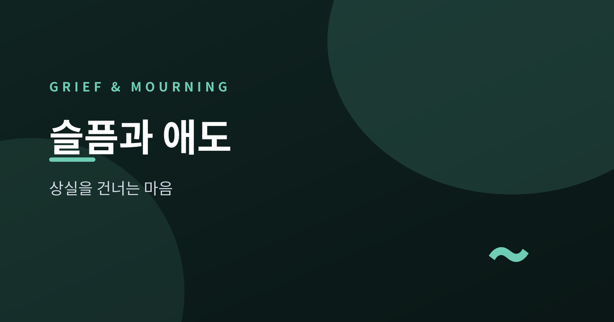
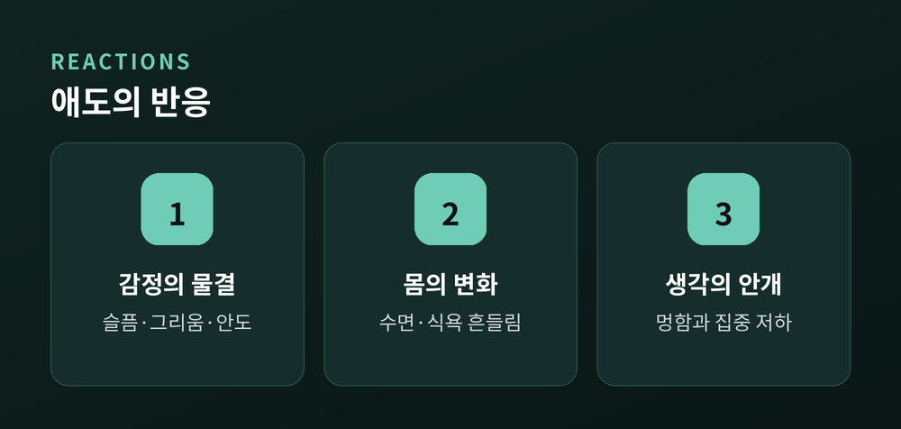
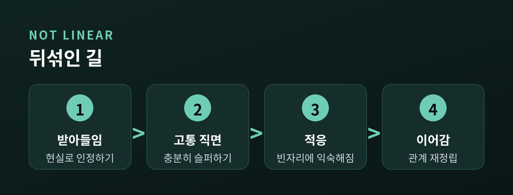
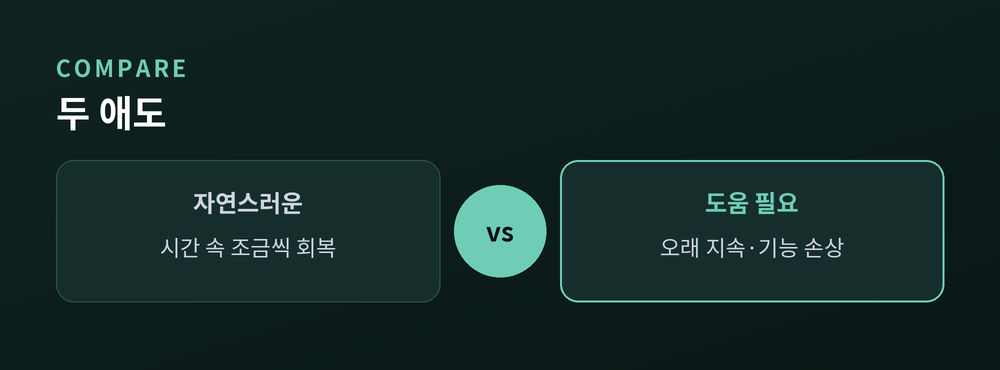
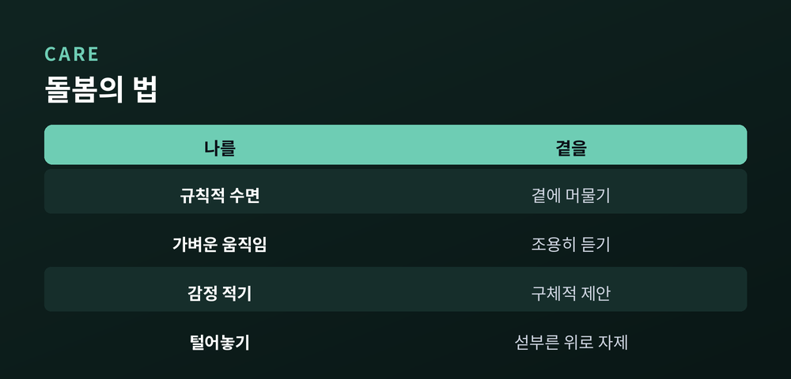

상실을 건너는 마음, 나만의 속도로

소중한 존재를 잃은 뒤 마음은 오래 흔들립니다. 그 흔들림은 고장이 아니라, 사랑했던 흔적입니다. 애도가 어떻게 흐르는지, 나와 곁을 어떻게 돌볼 수 있는지 차분히 짚어보겠습니다.
애도는 상실에 적응해 가는 마음의 과정입니다. 사별뿐 아니라 이별, 퇴사, 자녀의 독립처럼 소중한 것을 잃을 때도 찾아옵니다. 깊은 슬픔과 그리움, 멍한 무감각, 잠과 식욕의 변화, 때로는 안도감까지 폭넓게 나타납니다. 이런 반응들은 대개 이상 신호가 아니라, 몸과 마음이 변화를 감당하는 방식입니다. 그러니 낯선 감정이 올라와도 스스로를 탓하지 않으셔도 됩니다.

'부정-분노-타협-우울-수용'으로 알려진 애도 단계 이론은 널리 회자되는데요. 다만 실제 애도가 이 순서를 그대로 따른다는 근거는 충분치 않습니다. 사람마다 순서도, 겪는 감정의 종류도 다릅니다. 어떤 이는 분노 없이 안도를 느끼기도 합니다. 단계를 정답처럼 여기면 "나는 잘못 슬퍼하고 있다"는 부담이 생길 수 있습니다. 지도라기보다 하나의 참고쯤으로 두시는 편이 낫습니다.

많은 경우 시간이 흐르며 상실을 조금씩 삶에 받아들이게 됩니다. 반면 강렬한 그리움과 집착이 오래 이어지고, 일상과 사회생활, 직업 기능이 뚜렷하게 무너진 상태가 길게 지속되기도 합니다. 이를 지속성 애도 장애라 부르며, 국제 진단 체계에도 정식으로 등재되어 있습니다. 다만 이는 스스로 판정할 문제가 아닙니다. 기간이나 강도로 자신을 진단하기보다, 전문가와 함께 살펴볼 영역으로 남겨두시길 권합니다.
"애도에 정해진 속도는 없습니다. 나만의 리듬을 존중해도 괜찮습니다."

스스로를 돌볼 땐 규칙적인 수면과 식사, 가벼운 움직임처럼 기본을 지키는 일이 큰 힘이 됩니다. 감정을 글로 적거나 믿을 만한 사람에게 털어놓는 것도 도움이 됩니다. 곁을 지킬 땐 "다 잘된 일이야" 같은 섣부른 위로보다, 곁에 머물며 조용히 들어주는 편이 낫습니다. "필요하면 말해"보다 "이번 주에 반찬 가져다줄게"처럼 구체적으로 제안해 보세요. 작은 실천이 서로를 지탱합니다.

슬픔은 지워야 할 문제가 아니라, 천천히 함께 살아가는 마음입니다. 서두르지 않아도 됩니다. 다만 혼자 감당하기 어렵거나 일상이 무너질 정도라면, 전문 상담·정신건강 전문가의 도움을 받으시길 권합니다. 손을 내미는 일은 약함이 아니라, 나를 아끼는 방식입니다.
참고 소스